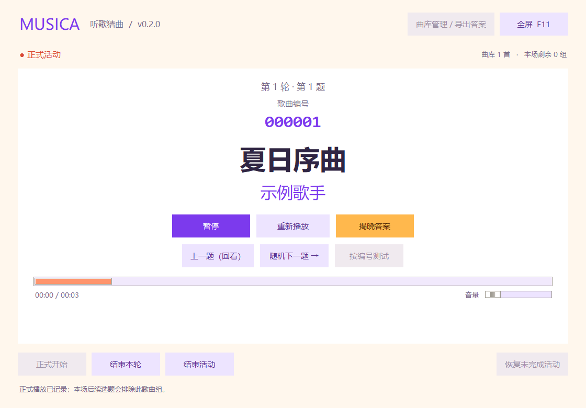

已发布
Windows
Windows 10 / 11 · x64
同一个安装包支持新装和升级，保留曲库、设置和活动记录。
下载 Windows 安装包 ↓想直接解压使用？下载便携 ZIP ↗版本说明 ↗音乐与聚会 / MUSICA
为主持人与共享屏幕设计的听歌猜曲工具。带上自己的 MP3，把答案留到揭晓，给下一场聚会添点音乐。
v0.3.1 · 新 Logo、进度拖动、Windows 与 Mac

给聚会加一点音乐
听一段音乐，猜一首歌。
让答案，留到揭晓的那一刻。

Windows 实际界面截图，歌名与音频为演示数据。
为主持人与共享屏幕设计的本地听歌猜曲工具。电脑显示歌曲编号，主持人用手机查答案。
Windows 运行安装包，Mac 将应用拖入“应用程序”，无需 Python 或额外播放器。
导入“歌手-歌曲名.mp3”，核对答案，再把导出的主持人答案表传到手机。
先用测试模式试听，再正式开始。大家作答后揭晓答案，继续下一题。
免费下载，带上你自己的 MP3。
Windows 10 / 11 · x64
同一个安装包支持新装和升级，保留曲库、设置和活动记录。
下载 Windows 安装包 ↓想直接解压使用？下载便携 ZIP ↗版本说明 ↗Apple Silicon / Intel
选择对应芯片的 DMG，拖入“应用程序”即可安装；替换旧应用升级，原有数据保留。
ZIP 下载与版本说明 ↗使用之前
Windows 和 Mac 发行包均已包含运行环境，不用安装 Python，安装后本地播放无需联网。
没有。请导入自己的 MP3 文件，曲库、主持人答案表和活动记录都保存在自己的电脑上。
活动前导出 HTML 答案表，在主持人的手机上打开，按电脑显示的永久编号查找。部分手机文件预览器需要改用浏览器打开才能搜索。
先退出旧版。Windows 运行新版安装包，便携版用户首次升级请选择原 Musica 文件夹；Mac 替换原位置的 Musica.app。歌曲、编号、设置和活动记录会保留。
可以在 GitHub 提交 Issue，附上软件版本、系统信息和复现步骤。 提交反馈 ↗
关于这个小小的角落
Larry-Tech 是一个个人作品空间，用来分享实用工具、记录项目迭代，也让每个版本比上一个更好一点。目前，这里先从 Musica 开始。
在 GitHub 找到我 ↗